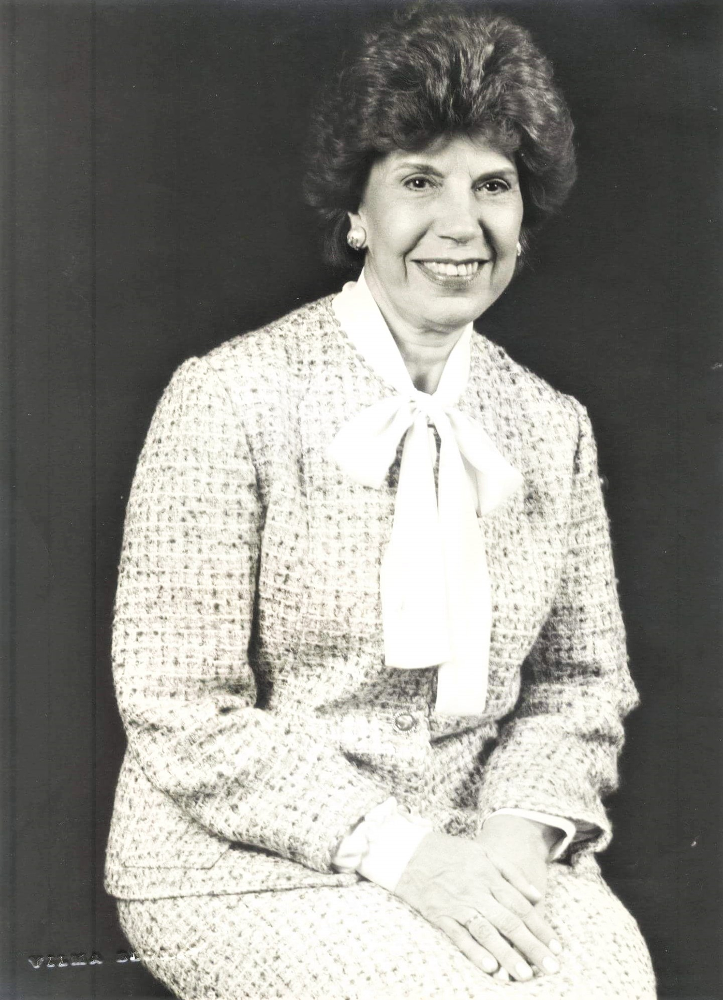

Patronesse
-
Dirce de Aguiar Maia

Nascida em Macaé, no Rio de Janeiro, Dirce de Aguiar Maia chegou a Maringá junto dos pais em 1944.
Pouco tempo depois, alguns empresários locais, apoiados pelo município de Apucarana - a qual Maringá estava vinculada sob categoria de patrimônio em 1946 - organizaram o primeiro espaço que passaria a sediar uma precária escola. O educandário, que ficou conhecido como "Casa Escolar", passou a ser comandado por Dirce de Aguiar Maia, que tinha formação no Curso Secundário. Mais tarde, o nome do estabelecimento foi alterado para "Escola Isolada do Maringá Velho".
Dirce também participou da Diretoria do Posto de Puericultura e Clube da Amizade de Maringá. Pediu sua exoneração do Magistério em 1951, indo residir em Londrina. Mas, depois de 3 anos, retomou à sua querida Maringá, onde foi nomeada por decreto do governo, Escrivã Civil do 2° Ofício, acumulando as funções de Escrivã de Família, Falências, Concordatas, Menores e Provedoria, e Escrivã da Paz, na sede da Comarca de Maringá.
Dirce se casou com Aníbal Goulart Maia, homem que ficaria marcado na história da cidade em 1956, quando ordenou que seu jagunço surrasse o então prefeito Américo Dias Ferraz por conta da cessão do Matadouro Municipal. Em resposta, a população saqueou e queimou a residência dos Maia.
Em 1970, foi homenageada pela Secretaria de Educação, que criou o Estabelecimento de Ensino com seu nome “Professora Dirce de Aguiar Maia”. E, em 1975, recebeu homenagem do Poder Público de Maringá, durante a gestão do prefeito Sílvio Magalhães Barros, como primeira professora e diretora da cidade.
Tendo se mudado para Curitiba ainda em 1957, Dirceu de Aguiar Maia foi secretária do Conselho Deliberativo da Associação Feminina da Criança Excepcional (AFECE) e secretária da Sociedade Beneficente das Senhoras Sírio-Libanesas do Paraná.
Dona Dirce, como ficou conhecida, faleceu com 91 anos em 19 de dezembro de 2012.
Colégio